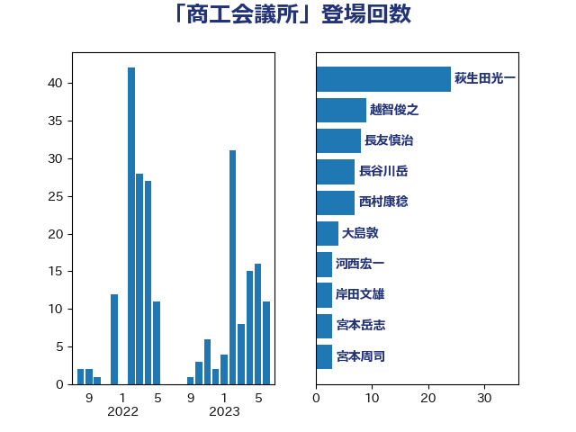

単語「商工会議所」

| 萩生田光一 | 自由民主党 | 24 回 |
| 越智俊之 | 自由民主党 | 9 回 |
| 長友慎治 | 国民民主党 | 8 回 |
| 長谷川岳 | 自由民主党 | 7 回 |
| 西村康稔 | 自由民主党 | 7 回 |
| 大島敦 | 立憲民主党 | 4 回 |
| 河西宏一 | 公明党 | 3 回 |
| 岸田文雄 | 自由民主党 | 3 回 |
| 宮本岳志 | 日本共産党 | 3 回 |
| 宮本周司 | 自由民主党 | 3 回 |
| 青柳仁士 | 日本維新の会 | 2 回 |
| 金子恭之 | 自由民主党 | 2 回 |
| 近藤和也 | 立憲民主党 | 2 回 |
| 芳賀道也 | 国民民主党 | 2 回 |
| 石川博崇 | 公明党 | 2 回 |
| 田村貴昭 | 日本共産党 | 2 回 |
| 田村憲久 | 自由民主党 | 2 回 |
| 片山さつき | 自由民主党 | 2 回 |
| 根本匠 | 自由民主党 | 2 回 |
| 松原仁 | 立憲民主党 | 2 回 |
| 早稲田ゆき | 立憲民主党 | 2 回 |
| 川合孝典 | 国民民主党 | 2 回 |
| 岩渕友 | 日本共産党 | 2 回 |
| 高橋千鶴子 | 日本共産党 | 1 回 |
| 高木陽介 | 公明党 | 1 回 |
| 高木かおり | 日本維新の会 | 1 回 |
| 鈴木隼人 | 自由民主党 | 1 回 |
| 野間健 | 立憲民主党 | 1 回 |
| 野田国義 | 立憲民主党 | 1 回 |
| 赤羽一嘉 | 公明党 | 1 回 |
| 角田秀穂 | 公明党 | 1 回 |
| 西田実仁 | 公明党 | 1 回 |
| 西村智奈美 | 立憲民主党 | 1 回 |
| 西村明宏 | 自由民主党 | 1 回 |
| 菅家一郎 | 自由民主党 | 1 回 |
| 礒崎哲史 | 国民民主党 | 1 回 |
| 石原正敬 | 自由民主党 | 1 回 |
| 石原宏高 | 自由民主党 | 1 回 |
| 玉木雄一郎 | 国民民主党 | 1 回 |
| 牧原秀樹 | 自由民主党 | 1 回 |
| 浜地雅一 | 公明党 | 1 回 |
| 櫻井充 | 自由民主党 | 1 回 |
| 森本真治 | 立憲民主党 | 1 回 |
| 梅谷守 | 立憲民主党 | 1 回 |
| 柚木道義 | 立憲民主党 | 1 回 |
| 柘植芳文 | 自由民主党 | 1 回 |
| 早坂敦 | 日本維新の会 | 1 回 |
| 日下正喜 | 公明党 | 1 回 |
| 平山佐知子 | 無所属 | 1 回 |
| 岬麻紀 | 日本維新の会 | 1 回 |
| 山添拓 | 日本共産党 | 1 回 |
| 山本博司 | 公明党 | 1 回 |
| 山岡達丸 | 立憲民主党 | 1 回 |
| 山口那津男 | 公明党 | 1 回 |
| 小田原潔 | 自由民主党 | 1 回 |
| 太田房江 | 自由民主党 | 1 回 |
| 太栄志 | 立憲民主党 | 1 回 |
| 塩村あやか | 立憲民主党 | 1 回 |
| 國重徹 | 公明党 | 1 回 |
| 國場幸之助 | 自由民主党 | 1 回 |
| 務台俊介 | 自由民主党 | 1 回 |
| 今枝宗一郎 | 自由民主党 | 1 回 |
| 五十嵐清 | 自由民主党 | 1 回 |
| 中野英幸 | 自由民主党 | 1 回 |
| 中川正春 | 立憲民主党 | 1 回 |
| 中川宏昌 | 公明党 | 1 回 |
| 上杉謙太郎 | 自由民主党 | 1 回 |
| 三浦信祐 | 公明党 | 1 回 |
| ながえ孝子 | 無所属 | 1 回 |